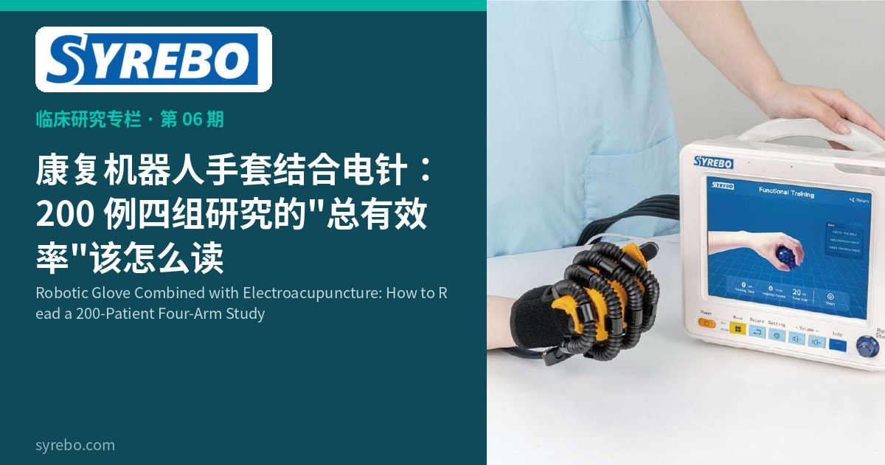

Syrebo 临床研究专栏
循证 · 康复机器人手套临床研究解读
文献摘录
康复机器人手套结合电针治疗痰瘀阻络型脑卒中手功能障碍患者的临床研究
孟灵、杨松、钟青华、王瑞安、林伟弟、尹刚刚、常小荣、蒋学余
湖南中医药大学学报, 2022, 42(3): 387-392
湖南中医药大学学报, 2022


把机器人手套和电针放在同一方案里，是中西医结合康复里的一种具体做法，但它回答的问题必须写清楚：看到的变化属于哪一条臂，不能自动算到手套头上。2022 年《湖南中医药大学学报》发表的一项四组临床研究，纳入 200 例痰瘀阻络型脑卒中手功能障碍患者，比较手套结合电针、单用手套、单用电针和常规康复。论文用“总有效率”报告：结合组 88%，手套组 76%，电针组 77.6%，常规康复组 70.8%。这是作者自己的复合判定，不是产品说明书上的有效率。
手功能障碍在痰瘀阻络这一中医分型下，临床路径常常同时包含现代康复和电针。四组平行设计的好处，是可以把“联用”“单用设备”“单用电针”和“常规康复”放在同一口径下看，而不是只用前后对照讲一个上升的故事。
总有效率把多种结局收成一个百分比，读的时候要先问清分母和判定标准。它便于组间对照，却不能还原成每一位患者的功能分变化，更不能被引用成“手套的有效率是 88%”。
研究设计
四组临床研究：康复机器人手套结合电针、单用手套、单用电针、常规康复。结局以论文报告的总有效率呈现。作者单位包括上海司羿智能科技有限公司，尹刚刚为共同作者，这一隶属需要在阅读时保留。
样本与周期
200 例痰瘀阻络型脑卒中手功能障碍患者，是本专栏各篇里样本量最大的一项。原文未标注可以对应到某一型号的设备名称。配图为通用示意，不作型号宣称。
核心结果
论文报告的总有效率为：手套结合电针组 88%，手套组 76%，电针组 77.6%，常规康复组 70.8%。结合组高于单用组，只能说明在该研究的判定口径下，联用臂的复合结局更高；不能把 88% 单独归因于手套，也不能把 76% 写成产品有效率。电针组与手套组的数字接近，更不支持把差异全部解释成某一种干预。
四组、200 例，提供的是一个可以对照的复合结局，而不是一个可以印在产品页上的百分比。把它放回“总有效率”这一口径里，读者才能看出联用、单用和常规康复之间的差距其实有限。
原文没有给出与本专栏其他随机对照相同的量表均数差。在那些量表公布之前，这篇论文更适合用来讨论方案如何组合，而不是用来承诺手功能会提高多少。
研究边界 总有效率是该研究的自有报告口径。联合组的结果不能单独归因于手套或电针。原文未标注具体型号。